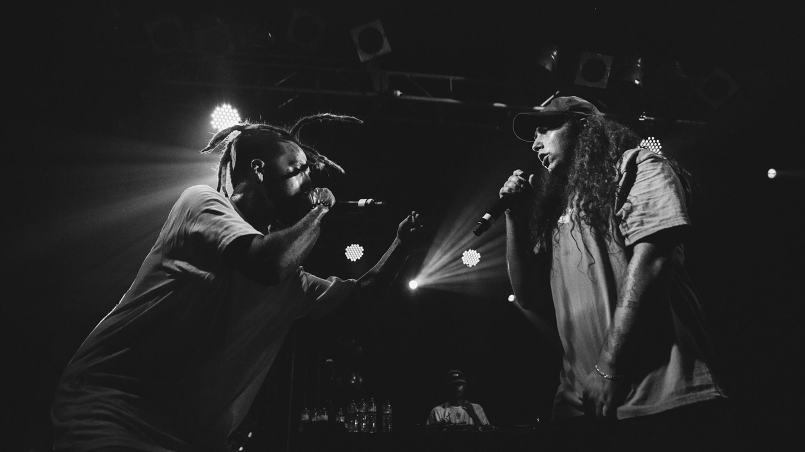

Suicideboys (estilizado como $uicideboy$ ) é uma dupla americana de hip hop de Nova Orleans , Louisiana , [6] fundada em 2014 pelos primos Ruby da Cherry e Scrim (estilizado como $crim ). Por meio da plataforma de compartilhamento de música SoundCloud , a dupla ganhou popularidade por suas batidas abrasivas e autoproduzidas, bem como por seu conteúdo lírico áspero e temas com destaque para abuso de substâncias e ideação suicida . Eles possuem e operam seu próprio selo, G*59 Records, sob o qual todas as suas músicas são distribuídas pela Virgin Music Label & Artist Services.. [7]
A dupla é considerada uma das bandas mais populares na cena do rap underground e também é considerada um culto de seguidores . [8] Depois de vários anos lançando apenas EPs e mixtapes , o primeiro álbum de estúdio dos Suicideboys, I Want to Die in New Orleans, foi lançado em 7 de setembro de 2018. Ele se saiu bem comercialmente, tornando-se seu primeiro álbum entre os dez primeiros na Billboard 200 dos EUA. . [9] Em maio de 2019, eles lançaram seu EP colaborativo de seis faixas com o baterista do Blink-182, Travis Barker , intitulado Live Fast, Die Whatever , que também contou com a participação de Kornguitarrista James Shaffer . Eles venderam mais de $ 2,5 milhões em todo o mundo.